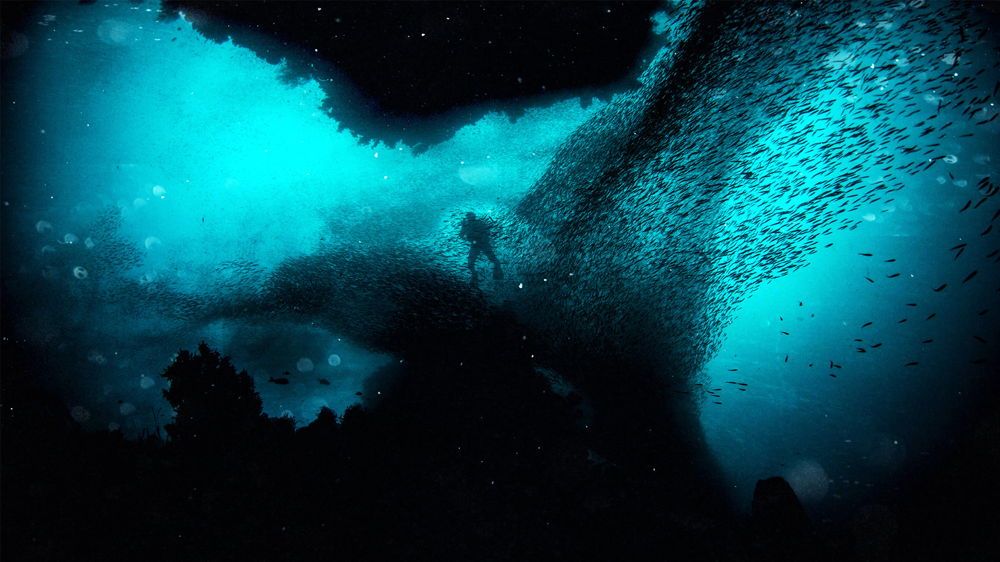

一瓶的海岸線
在海邊遊玩，不只帶走自己的垃圾，讓我們順手撿起沙灘上的垃圾！ 淨灘可以是一場光鮮亮麗的形象活動、一天飆汗過癮的工作假期、一堂深刻體驗的教育課程；甚至是一個啟發環境意識、重整生活態度的全新契機。 淨灘，不是停止垃圾汙染的終點，卻是每個人親海、愛海與守護海洋的最佳起點。 荒野保護協會與企業、政府、民眾合作，透過「產業創新、公民守護、政策改革」三大策略，希望可以逐年減少海洋廢棄物的數量，留給子孫可以赤腳奔跑的潔白沙灘、魚群自在優游的透澈藍海。 您可以透過淨灘，與荒野共同減少廢棄物進入大海的機會。